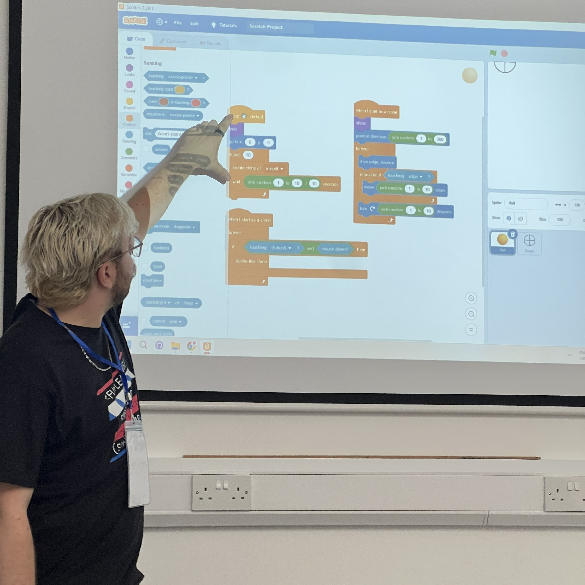

The pragmatic and the playful, in roughly equal measure.
Duct tape development
One of my favourite ways of doing development is what I think of as duct tape development - little pieces of code or sites I make that help make my life and job easier. Sometimes something doesn't need to be polished to get the job done. It's about getting from problem to solution without overcomplicating the path in between.
An example of this is at work there was a 14-step guide to getting a token for a service that would normally run on an iPad. I did this 14-step solution once and realised I never wanted to do it again, so I made various calls to different APIs to build up the request - all of which were included in the original steps - and stuck it on a site with a button. Now for a token you could just press that and you'd have the token given to you.
Duct tape solutions work for many things, but on the other side of things, making a solid piece of development that's easy to expand on and well written from the start is just as important.
'/%3E%3Cg fill='rgba(255,255,255,0.12)'%3E%3Crect x='140' y='160' width='280' height='120' rx='16'/%3E%3Crect x='460' y='160' width='280' height='120' rx='16'/%3E%3Crect x='780' y='160' width='280' height='120' rx='16'/%3E%3Crect x='140' y='320' width='920' height='80' rx='16'/%3E%3C/g%3E%3C/svg%3E) From 14 steps to a single button.
From 14 steps to a single button.

A Saturday at Impact Academies, walking through a Scratch project.Teaching kids to make things
In my hometown, I was walking along a road on my way to work and saw a new building had opened up. It had ASCII art on the window and advertised being a code academy and camp for kids. I'd taught a few times in primary schools that my mum worked at - helping teachers when they reached the point of teaching Scratch - and I loved it every time. So I took the opportunity to apply, and I did it nearly every Saturday for six months in 2025.
I got to teach the kids all sorts of practical skills for their professional future. Some coding-specific, like Python with the older children, but mainly code and design fundamentals. A lot of it was using early programming platforms like Scratch or MIT App Inventor. I also got them to present back to their parents at the end of a 12-week module, teaching the required skills to make and deliver a presentation.
When I joined, some of the kids seemed to lack the drive to make something - and every time I got to see one of them have an idea, I explained that we could make it, and then we actually did. It felt like a massive win. Teaching the kids gave me a new energy to start learning new things, because some of the platforms we used weren't available to me when I started coding.
Leading projects at work
In my job I've been given the opportunity to head up a few different projects - giving the customer the option to repeat order as a subscription, leading our new approach to product search, and saving payment cards for future orders.
The subscription project allowed me to design a couple of new microservices, which plugged into our existing microservice structure and our monolith. It was a great opportunity to use the strangulation approach on our monolith, while also introducing a revenue stream that could guarantee a certain income.
The product search project gave me an opportunity to come up with a way to A/B test different search models, and create an algorithm based on a user's search logs to determine how frustrated customers were during the process. It's the kind of work that blends logic with curiosity - solving real problems while exploring better ways to think about them.
The payments project was a very interesting challenge as adding in saved payments had never been a plan, so not only did it have to plug into the monolith, we also had to redesign a few microservices to allow for this too. Keeping track of where all the data lived and where it should end up was our biggest challenge. Ultimately ending with a relatively smooth roll out given the scale of the project.
'/%3E%3Cg fill='rgba(255,255,255,0.12)'%3E%3Crect x='160' y='220' width='280' height='180' rx='16'/%3E%3Crect x='480' y='220' width='280' height='180' rx='16'/%3E%3Crect x='800' y='220' width='240' height='420' rx='16'/%3E%3Crect x='160' y='440' width='600' height='200' rx='16'/%3E%3C/g%3E%3C/svg%3E) Subscriptions, strangling the monolith, and smarter search.
Subscriptions, strangling the monolith, and smarter search.
'/%3E%3Cg fill='rgba(255,255,255,0.12)'%3E%3Crect x='180' y='180' width='260' height='160' rx='14'/%3E%3Crect x='480' y='140' width='320' height='140' rx='14'/%3E%3Crect x='860' y='220' width='160' height='200' rx='14'/%3E%3Crect x='240' y='420' width='760' height='200' rx='16'/%3E%3C/g%3E%3C/svg%3E) A growing garden of half-sparks and future projects.
A growing garden of half-sparks and future projects.
Collecting ideas & making them real
I've been collating my ideas for a long time - since pre-university - chucking them on my phone in a notes app. Once I got to 50-plus ideas, it wasn't manageable, so I started to sort them. I've got ideas for videos, costumes, stickers, physical projects, development projects, games, and mods for existing games.
Not all of these ideas end up as something polished or even a duct tape solution, but the point is that now, no idea gets left behind. Every half-thought and half-finished spark is a seed for something future-me might turn into something cool.